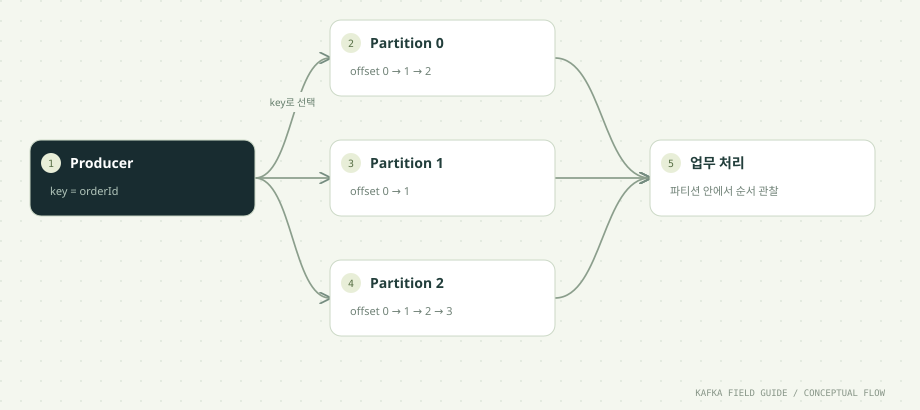

이 단원을 마치면
- 파티션별 순서 보장을 설명한다
- key와 partition의 관계를 확인한다
- offset을 토픽 전체의 번호로 오해하지 않는다
- 파티션 수를 정할 때 따져 볼 기준과 보관 정책(delete · compact)을 구분한다
01 / UNDERSTAND먼저, 원리를 이해합니다.
파티션은 독립된 로그입니다
토픽 하나는 하나 이상의 파티션으로 나뉩니다. 이 과정의 orders 토픽은 파티션 3개(P0, P1, P2)로 만들었습니다. 각 파티션은 그 자체로 완결된 로그 파일이며, 새 레코드는 항상 그 파티션의 끝에 덧붙여집니다(append). 이미 기록된 레코드를 중간에 끼워 넣거나 고치지 않습니다.
파티션이 독립되어 있기 때문에 서로 다른 브로커에 흩어 둘 수 있고, 서로 다른 Consumer가 동시에 읽을 수 있습니다. 쓰기와 읽기를 여러 대가 나눠 맡는 수평 확장의 단위가 바로 파티션입니다. 반대로 말하면, 한 파티션은 한 번에 한 줄로만 쓰이고 그룹 안에서 한 Consumer만 읽습니다. 파티션 하나의 처리량에는 상한이 있습니다.
여러 파티션의 이벤트를 모아 하나의 전역 순서로 읽을 수 있다고 가정하면 안 됩니다. Consumer는 여러 파티션에서 레코드를 가져오며, 어느 파티션의 레코드가 먼저 출력될지는 네트워크와 fetch 시점에 따라 달라집니다. 순서를 보장받고 싶은 이벤트는 같은 파티션에 들어가도록 설계해야 합니다.
Key는 함께 처리할 대상을 나타냅니다
Producer가 레코드에 key를 넣으면, 기본 파티셔너는 직렬화된 key 바이트의 해시 값으로 파티션을 고릅니다. 공식은 개념적으로 해시(key) % 파티션 수입니다. 같은 key는 같은 해시 값을 내므로, 파티션 수와 파티셔너가 바뀌지 않는 한 같은 key는 항상 같은 파티션으로 갑니다. 이 계산은 결정적이라 실행할 때마다 달라지지 않습니다.
여기서 흔히 하는 오해가 '주문 3개, 파티션 3개니까 파티션마다 하나씩'입니다. 해시는 key 값을 고르게 흩뿌릴 뿐 빈자리를 채워 주지 않습니다. 실제로 이 저장소의 검증 기록을 보면 order-0과 order-1이 모두 partition 1로, order-2가 partition 0으로 갔고, partition 2에는 이 세 key가 하나도 배정되지 않았습니다. key 종류가 적을수록 이런 쏠림이 잘 드러납니다.
key는 '이 이벤트들은 서로 순서를 지켜야 한다'는 묶음 표시이자, 부하가 어떻게 나뉠지를 정하는 값입니다. 그래서 key는 업무적으로 의미 있는 식별자(orderId, userId, deviceId 등)로 정하고, key 종류가 충분히 많아 부하가 고르게 퍼지는지도 함께 확인합니다.
순서 설계는 업무 단위에서 시작합니다
'Kafka가 순서를 보장하나요?'라는 질문에는 '무엇의 순서인가'를 되물어야 합니다. 쇼핑몰이라면 주문 하나의 생성 → 결제 → 취소 순서는 반드시 지켜져야 하지만, 서로 다른 고객의 주문끼리는 순서가 바뀌어도 업무에 문제가 없습니다. 이럴 때 orderId를 key로 쓰면 주문 단위 순서를 지키면서 주문들은 여러 파티션에 나눠 병렬로 처리할 수 있습니다.
같은 파티션에 넣었다고 끝은 아닙니다. 순서가 깨지는 지점은 Kafka 밖에도 있습니다.
- 여러 Producer의 동시 전송: 서로 다른 서버가 같은 주문의 이벤트를 거의 동시에 보내면, 브로커에 도착한 순서가 곧 기록 순서가 됩니다. 업무상 순서와 다를 수 있습니다.
- Producer 재시도: 재시도 중에 앞선 배치가 뒤로 밀리는 일을 막으려면 멱등 Producer(
enable.idempotence=true)와max.in.flight.requests.per.connection5 이하를 함께 씁니다. 공식 문서는 멱등성을 끈 채 재시도하면서 이 값을 1보다 크게 두면 순서가 바뀔 수 있다고 설명합니다. - Consumer 내부 병렬 처리: 한 파티션에서 받은 레코드를 여러 스레드에 나눠 처리하면 완료 순서가 뒤섞입니다.
순서가 중요한 단위를 먼저 정의하고, 그 단위를 key로 삼고, 그 뒤의 처리 과정에서도 순서를 깨뜨리지 않는지 확인하는 순서로 설계합니다.
offset은 파티션 안의 위치 번호입니다
offset은 파티션마다 0부터 증가하는 위치 번호입니다. 토픽 전체의 일련번호가 아니므로 P0의 offset 7과 P1의 offset 7은 전혀 다른 레코드입니다. 레코드 하나를 정확히 가리키려면 토픽 + 파티션 + offset 세 가지가 모두 필요합니다. 07단원의 DLT가 실패한 레코드의 위치를 orders.retry:2:1처럼 남기는 이유입니다.
offset에는 몇 가지 성질이 있습니다.
- 한 번 붙은 번호는 바뀌지 않습니다: 보관 기간이 지나 앞부분이 지워져도 남은 레코드의 offset은 그대로입니다. 그래서 파티션의 '가장 오래된 offset'이 0이 아닐 수 있습니다.
- 항상 빈틈없이 이어진다고 가정하지 않습니다: 트랜잭션의 제어 레코드(09단원)나 compaction으로 정리된 자리 때문에 Consumer가 받는 offset 사이에 빈 번호가 생길 수 있습니다.
- Consumer의 위치도 offset으로 표현합니다: Consumer Group이 커밋하는 값은 '다음에 읽을 offset'입니다. offset 12까지 처리했다면 13을 커밋합니다(05단원).
offset 덕분에 Kafka는 '누가 어디까지 읽었는가'를 숫자 하나로 관리하고, 원하는 위치로 돌아가 다시 읽을 수 있습니다.
로그와 세그먼트로 저장합니다
파티션 로그는 실제로는 하나의 거대한 파일이 아니라 여러 세그먼트 파일로 나뉘어 디스크에 저장됩니다. 새 레코드는 항상 마지막 세그먼트(활성 세그먼트)에 덧붙여지고, 세그먼트가 일정 크기(segment.bytes, 기본 1GiB)나 시간(segment.ms, 기본 7일)에 이르면 새 세그먼트로 넘어갑니다. 오래된 데이터를 지울 때도 레코드 한 건씩이 아니라 세그먼트 단위로 지웁니다.
디스크에 쓴다고 느릴 것이라 생각하기 쉽지만, Kafka의 설계 문서는 그렇지 않은 이유를 설명합니다. 끝에 덧붙이기만 하는 순차 쓰기는 임의 위치 쓰기보다 훨씬 빠르고, 운영체제의 페이지 캐시가 최근 데이터를 메모리에 올려 두며, 여러 레코드를 묶은 배치 단위로 네트워크와 디스크를 오갑니다. 디스크에 저장하기 때문에 프로세스가 재시작되어도 데이터가 남는다는 장점도 있습니다.
보관 기간이 지나면 데이터는 사라지므로 Kafka는 영구 저장소가 아닙니다. 이 과정의 토픽은 retention.ms=604800000(7일)으로 만들었고, 그보다 오래된 세그먼트는 누가 읽었는지와 관계없이 정리됩니다.
시간순으로 따라가기: 이벤트 6건은 어느 파티션에 쌓일까?
producer 6 orders demo처럼 6건을 보냈을 때를 이 저장소의 검증 기록(검증/결과/scenario-producer.log)에 나온 배치로 재구성했습니다. offset은 빈 토픽에서 시작했다고 가정한 값입니다.
| 순서 | 레코드 (eventId · key) | 배치된 파티션 | 그 파티션의 offset | 관찰 포인트 |
|---|---|---|---|---|
| 1 | demo-0 · order-0 | partition 1 | 0 | partition 1에 첫 레코드가 쌓입니다. |
| 2 | demo-1 · order-1 | partition 1 | 1 | 다른 key인데도 같은 파티션입니다. 해시 충돌은 정상입니다. |
| 3 | demo-2 · order-2 | partition 0 | 0 | partition 0은 자기 번호를 0부터 따로 셉니다. |
| 4 | demo-3 · order-0 | partition 1 | 2 | order-0의 두 번째 이벤트도 같은 파티션 끝에 붙습니다. |
| 5 | demo-4 · order-1 | partition 1 | 3 | partition 1에만 레코드가 몰립니다. |
| 6 | demo-5 · order-2 | partition 0 | 1 | partition 2에는 아무것도 쌓이지 않았습니다. |
key가 3종류뿐이라 쏠림이 크게 보입니다. 같은 key와 같은 파티션 수라면 기본 파티셔너는 같은 결과를 내지만, offset은 토픽에 이미 쌓인 데이터에 따라 달라집니다.
기본 파티셔너는 어떻게 파티션을 고를까?
partitioner.class를 지정하지 않았을 때의 동작입니다. Kafka 4.3 Producer 설정 문서를 기준으로 정리했습니다.
| 상황 | 파티션 선택 방식 | 순서 | 부하 분산 |
|---|---|---|---|
| key가 있음 (기본) | 직렬화된 key의 해시 값으로 파티션을 고릅니다. | 같은 key끼리 파티션 안 순서가 지켜집니다. | key 분포에 따라 달라집니다. 특정 key가 많으면 쏠립니다. |
| key가 없음 (null) | 한 파티션에 붙어서(sticky) 보내다가 batch.size만큼 보내면 다른 파티션으로 바꿉니다. | 레코드 사이의 순서를 기대할 수 없습니다. | 배치가 잘 채워지고 시간이 지나면 고르게 퍼집니다. |
partitioner.ignore.keys=true | key가 있어도 무시하고 key가 없을 때처럼 고릅니다(기본값 false). | key 단위 순서가 사라집니다. | key 쏠림과 무관하게 퍼집니다. |
적응형 분배 (partitioner.adaptive.partitioning.enable) | 기본값 true입니다. key 없는 레코드를 응답이 빠른 브로커의 파티션에 더 많이 보냅니다. | key 없는 레코드에만 해당합니다. | 느린 브로커를 피해 처리량을 지킵니다. |
RoundRobinPartitioner 같은 다른 구현도 있지만, 공식 문서는 이 파티셔너에 고르지 않은 분배 문제(KAFKA-9965)가 알려져 있다고 적고 있습니다.
보관 정책 비교: delete와 compact
| 비교 항목 | cleanup.policy=delete (기본값) | cleanup.policy=compact |
|---|---|---|
| 무엇을 남기나 | 보관 기간(retention.ms, 기본 7일)이나 크기(retention.bytes, 기본 무제한) 안의 모든 레코드 | key마다 적어도 최신 값 하나 |
| 정리 단위 | 오래된 세그먼트를 통째로 삭제합니다. | 같은 key의 과거 값을 백그라운드에서 정리합니다. |
| 삭제 표현 | 시간이나 크기가 넘으면 자동으로 사라집니다. | value가 null인 레코드(tombstone)를 보내 key를 지웁니다. |
| offset과 순서 | 남은 레코드의 offset은 그대로입니다. | 정리되어도 offset은 바뀌지 않고 순서도 유지됩니다. |
| 어울리는 용도 | 이벤트 이력, 로그, 재처리용 원천 데이터 | 설정값, 최신 상태 스냅샷, Streams 상태 복구용 changelog |
retention.bytes는 토픽 전체가 아니라 파티션 하나의 한도입니다. 토픽 전체 용량은 이 값에 파티션 수를 곱해 계산합니다.
한 걸음 더: 함께 알아둘 개념
기본 흐름을 이해했다면, 실무에서 곧바로 마주치는 관련 개념을 이어서 정리합니다.
파티션 수는 어떻게 정할까요?
파티션 수는 토픽을 만들 때 가장 신중하게 정해야 하는 값입니다. 따져 볼 기준은 다음과 같습니다.
- Consumer 병렬성의 상한: 한 그룹 안에서 파티션 하나는 Consumer 하나만 읽습니다. 파티션이 3개면 같은 그룹의 Consumer를 10개 띄워도 일하는 Consumer는 3개뿐입니다(03단원). 앞으로 필요할 최대 Consumer 수를 파티션 수의 하한으로 잡습니다.
- 처리량: 파티션 하나가 감당할 수 있는 쓰기·읽기 속도에는 한계가 있습니다. 목표 처리량을 파티션 하나의 실측 처리량으로 나눠 필요한 개수를 가늠합니다.
- 줄일 수 없습니다: Kafka는 기존 토픽의 파티션 수를 줄이는 기능을 제공하지 않습니다. 줄이려면 새 토픽을 만들어 옮겨야 합니다.
- 늘리면 key 배치가 바뀝니다: 파티션을 늘릴 수는 있지만
해시 % 파티션 수의 결과가 달라지므로, 같은 key의 새 이벤트가 예전과 다른 파티션으로 갑니다. 기존 레코드는 원래 파티션에 남으므로 증설 시점 전후로 key 단위 순서가 깨질 수 있습니다. - 많다고 공짜가 아닙니다: 파티션마다 세그먼트 파일, 인덱스, 복제 작업, 메타데이터가 늘어납니다. 필요 이상으로 크게 잡지 않습니다.
그래서 실무에서는 예상 최대 처리량과 Consumer 수에 여유를 두고 처음부터 넉넉히 잡는 편입니다. 증설이 필요하면 key 순서에 민감한 토픽인지 먼저 확인합니다.
핫 파티션: key가 한쪽으로 몰릴 때
key 해시는 key의 종류를 고르게 흩어 줄 뿐, key마다 레코드 양이 다른 것까지 맞춰 주지는 않습니다. 특정 key 하나가 전체 이벤트의 절반을 차지하면 그 key가 배정된 파티션 하나에 부하가 몰립니다. 이를 핫 파티션이라고 부릅니다.
핫 파티션이 생기면 그 파티션을 맡은 Consumer만 바쁘고 나머지는 놀게 되며, 그 파티션의 Lag만 계속 커집니다(12단원). 브로커 디스크 사용량도 한쪽으로 기웁니다.
대응 방법은 업무 요구에 따라 다릅니다.
- key를 더 잘게 나눕니다: 순서가 꼭 필요한 범위가 '사용자 단위'가 아니라 '사용자의 세션 단위'라면 key를 그만큼 세분합니다.
- 순서가 필요 없다면 key를 비웁니다: null key는 sticky 방식으로 고르게 퍼집니다.
- 쏠림을 관찰합니다: 파티션별 유입량과 Lag을 따로 봐야 쏠림을 발견할 수 있습니다. 토픽 합계만 보면 놓치기 쉽습니다.
compaction과 tombstone 조금 더 보기
cleanup.policy=compact인 토픽은 같은 key의 레코드 중 최신 값만 남기는 방향으로 정리됩니다. 'key별 현재 상태'를 Kafka에 보관하고 싶을 때 씁니다. Kafka Streams가 상태 복구용으로 만드는 changelog 토픽(11단원)이 대표적인 예입니다.
몇 가지 성질을 알아 두면 오해를 줄일 수 있습니다.
- 정리는 비동기입니다: 백그라운드 cleaner가 조건(
min.cleanable.dirty.ratio, 기본 0.5 등)을 만족할 때 정리하므로, 같은 key의 과거 레코드가 즉시 사라지지 않습니다. Consumer는 한동안 같은 key의 여러 값을 볼 수 있습니다. - 삭제는 tombstone으로 표현합니다: key는 있고 value가 null인 레코드를 보내면 그 key의 이전 값이 정리 대상이 됩니다. tombstone 자체도
delete.retention.ms(기본 1일)가 지나면 사라집니다. - 뒤처진 Consumer는 삭제를 놓칠 수 있습니다: Kafka 설계 문서는
delete.retention.ms보다 오래 뒤처진 Consumer가 삭제 표시를 보지 못할 수 있다고 설명합니다.
이 실습의 토픽은 모두 기본 delete 정책입니다. 이벤트 이력 전체를 보관하고 재처리하는 것이 목적이기 때문입니다.
02 / FOLLOW THE EVENT데이터의 이동을 따라갑니다.


원리를 이해하기 위한 단계 모델입니다. 네트워크 시간이나 장애 판정을 재현하지 않습니다.
03 / READ THE CODE현업 패턴을 코드로 읽습니다.
아래 코드는 함께 제공된 실행 소스에서 발췌했습니다. 전체 클래스와 설정은 소스 파일에서 확인할 수 있습니다.
for (int i = 0; i < count; i++) {
String orderId = "order-" + (i % 3);
OrderEvent event = OrderEvent.create(run + "-" + i, orderId, 1000L * (i + 1));
// Waiting makes ack/failure visible. Throughput-oriented production code
// typically uses async callbacks and bounded backpressure instead.
RecordMetadata result = producer.send(
new ProducerRecord<>(topic, orderId, event.json())).get();
System.out.printf("SENT event=%s key=%s partition=%d offset=%d%n",
event.eventId(), orderId, result.partition(), result.offset());
}소스: 초급/src/main/java/study/kafka/OrderProducer.java · 12행부터
ProducerRecord의 두 번째 인자가 key입니다. 이 코드에서는orderId(예:order-0)를 key로 씁니다.i % 3으로 key가order-0,order-1,order-2를 돌아가며 반복되게 했습니다. 같은 key가 여러 번 나오므로 로그에서 partition이 같은지, offset이 증가하는지 비교할 수 있습니다.send().get()은 학습 중 ack와 실패를 한 건씩 확인하기 위한 직렬 전송입니다. 대량 전송에서는 비동기 callback, 배치, 제한된 대기열을 함께 설계합니다(04단원).RecordMetadata의partition()과offset()은 브로커가 실제로 저장한 위치입니다. Producer가 미리 정한 값이 아니라 ack와 함께 돌아온 결과입니다.
04 / MAKE IT REAL이제, 직접 확인합니다.
PowerShell에서 저장소 루트로 이동한 뒤 실행하세요. 01단원의 up → build → init이 선행되어야 합니다. 종료된 환경은 up으로 다시 시작합니다. 이후 단원의 max=0은 입력이 끊긴 뒤 25초까지 읽습니다. 대응 실습 안내 파일 ↗
01. 주문 이벤트 전송
.\실습\study.ps1 run producer 12 orders day023가지 key에 대해 SENT 로그 12줄이 출력됩니다.
SENT event=day02-0 key=order-0 partition=1 offset=2
SENT event=day02-1 key=order-1 partition=1 offset=3
SENT event=day02-2 key=order-2 partition=0 offset=1
SENT event=day02-3 key=order-0 partition=1 offset=4
...
SENT event=day02-11 key=order-2 partition=0 offset=4위 숫자는 01단원의 3건이 먼저 쌓여 있다고 가정한 예시이며, offset은 토픽에 이미 쌓인 기록에 따라 다릅니다. 확인할 것은 두 가지입니다.
- 같은 key는 같은 partition:
order-0이 나온 줄은 모두 같은 partition 번호를 가져야 합니다. - 같은 partition 안에서 offset 증가: 같은 partition의 줄만 모아 보면 offset이 1씩 커집니다. partition 0과 partition 1의 offset은 서로 무관합니다.
이 저장소의 검증 기록에서는 order-0과 order-1이 partition 1로, order-2가 partition 0으로 갔습니다. 기본 파티셔너는 같은 key와 같은 파티션 수에 대해 항상 같은 파티션을 고르므로, 파티션이 3개인 orders라면 여러분의 결과도 같게 나옵니다. partition 2에는 이 세 key가 배정되지 않을 수 있으며, 이는 해시 충돌로 생기는 정상 결과입니다.
02. 파티션 정보
.\실습\study.ps1 topicsorders에 P0~P2가 있고 각 파티션의 Leader가 표시됩니다.
topics는 브로커 컨테이너 안에서 kafka-topics.sh --describe를 실행합니다. 토픽마다 요약 한 줄과 파티션별 줄이 이어집니다(탭 간격은 정리했습니다).
Topic: orders TopicId: 4i58hW... PartitionCount: 3 ReplicationFactor: 1 Configs: min.insync.replicas=1,retention.ms=604800000
Topic: orders Partition: 0 Leader: 1 Replicas: 1 Isr: 1 Elr: LastKnownElr:
Topic: orders Partition: 1 Leader: 1 Replicas: 1 Isr: 1 Elr: LastKnownElr:
Topic: orders Partition: 2 Leader: 1 Replicas: 1 Isr: 1 Elr: LastKnownElr:PartitionCount: 3은init에서 정한 파티션 수,Configs는 토픽에 직접 지정한 설정입니다.Leader,Replicas,Isr의 숫자는 브로커 ID입니다. 단일 환경에는 브로커 1번만 있습니다.- 이 명령은 토픽 이름을 지정하지 않으므로 다른 실습 토픽도 함께 나옵니다. Consumer Group이 커밋을 남긴 뒤라면
__consumer_offsets같은 내부 토픽이 보일 수도 있습니다(03단원).
이 출력에는 레코드 개수가 나오지 않습니다. 파티션별로 어디까지 쌓였는지는 다음 실습 뒤에 groups --describe의 LOG-END-OFFSET으로 확인합니다.
03. 읽기
.\실습\study.ps1 run consumer day02-reader 0 orders그룹이 처음이라면 기존 기록도 읽습니다. key별 partition과 offset을 기록하세요.
ASSIGNED [orders-0, orders-1, orders-2]
RECEIVED group=day02-reader key=order-2 partition=0 offset=0 value={...}
RECEIVED group=day02-reader key=order-2 partition=0 offset=1 value={...}
...
RECEIVED group=day02-reader key=order-0 partition=1 offset=0 value={...}
RECEIVED group=day02-reader key=order-1 partition=1 offset=1 value={...}
...
REVOKED [orders-0, orders-1, orders-2]
CONSUMED 15max=0이므로 개수 제한 없이 읽다가, 새 레코드가 25초 동안 없으면 종료합니다.CONSUMED숫자는 01단원 기록을 포함한 전체 개수라 실행 환경마다 다릅니다. 01단원 3건과 이번 12건만 있었다면 15입니다.- 출력은 파티션 단위로 몰려 나오는 경우가 많습니다. Consumer가 한 번의 fetch로 파티션별 묶음을 받아 오기 때문입니다. 파티션끼리의 출력 순서는 의미가 없습니다.
- 같은 partition의 줄만 보면 offset이 빠짐없이 증가하고, 같은 key의 이벤트는 보낸 순서대로 나옵니다. 이것이 Kafka가 보장하는 순서입니다.
한 걸음 더 실험하기
- 전송 로그에서
order-0에 해당하는 줄만 골라 partition이 모두 같은지 확인하세요. - key 3개가 반드시 서로 다른 파티션에 들어가는지 확인해 보세요. 충돌은 정상이며, 어느 파티션이 비어 있는지도 기록합니다.
.\실습\study.ps1 groups --describe --group day02-reader로 파티션별 LOG-END-OFFSET을 보고, 어느 파티션에 레코드가 몰렸는지 숫자로 비교해 보세요.
05 / APPLY IT로그 수집 파이프라인에 적용하면
같은 개념이 대용량 장비 로그 수집(수집 에이전트 → 수집 서버 → Kafka → 로그 저장소)에서는 어떻게 쓰이는지 정리합니다. 특정 회사나 장비가 아닌 일반적인 구성을 기준으로 합니다.
장비 로그의 key와 파티션 수는 어떻게 정할까?
장비 로그 수집에서 key 선택은 '장비별 순서가 꼭 필요한가'라는 질문으로 시작합니다.
- deviceId를 key로 쓰는 경우: 한 장비의 로그가 항상 같은 파티션에 들어가므로 장비 단위로 발생 순서가 유지됩니다. 장비의 상태 전이(가동 → 정지 → 오류)를 순서대로 해석해야 하는 Consumer가 있다면 이 방식이 맞습니다. 대신 로그를 유난히 많이 쏟아내는 장비 하나가 파티션 하나를 뜨겁게 만들 수 있습니다. 장애가 난 장비는 평소보다 훨씬 많은 로그를 남기므로 쏠림은 하필 장애 상황에서 커집니다.
- key를 비우는 경우: 저장소에 적재만 하고 순서는 저장소의 시각 컬럼으로 정렬해 조회한다면 key가 없어도 됩니다. sticky 파티셔너가 배치를 잘 채워 처리량이 좋고 파티션 간 부하도 고르게 퍼집니다.
파티션 수는 '로그 저장 Consumer를 최대 몇 개까지 늘릴 것인가'와 '최대 초당 유입량'으로 정합니다. 나중에 줄일 수 없고, 늘리면 deviceId 기준 배치가 바뀌므로 처음부터 여유 있게 잡습니다.
보관 용량도 계산해 둡니다. retention.bytes는 파티션 하나의 한도이므로, '하루 유입량 × 보관 일수 × 복제 수'가 브로커 디스크에 들어가는지 확인합니다. 보관 기간은 '로그 저장소가 며칠 멈춰도 Kafka에서 다시 적재할 수 있어야 하는가'로 정합니다. 오래된 로그를 검색하는 일은 Kafka가 아니라 로그 저장소의 몫입니다.
06 / CHECK YOUR UNDERSTANDING설명할 수 있으면, 내 지식입니다.
자주 묻는 질문
파티션이 3개인데 key가 3개면 파티션마다 하나씩 들어가나요?
보장되지 않습니다. 파티션은 해시(key) % 파티션 수로 정해지므로 서로 다른 key가 같은 파티션에 모일 수 있고, 어떤 파티션은 비어 있을 수 있습니다. 이 저장소의 실행 기록에서도 order-0과 order-1이 같은 partition 1로 갔습니다. key 종류가 수천 개 이상으로 많고 key마다 레코드 양이 비슷하다면 통계적으로 고르게 퍼집니다.
토픽 전체에서 순서를 지키려면 어떻게 하나요?
파티션을 1개로 만들면 토픽 전체가 하나의 순서를 갖습니다. 대신 그룹 안에서 그 토픽을 읽는 Consumer도 사실상 1개로 제한되어 병렬 처리를 포기하게 됩니다. 대부분의 업무는 전역 순서가 아니라 '주문 단위', '장비 단위' 같은 범위의 순서만 필요하므로, 그 범위를 key로 삼는 편이 낫습니다.
offset이 0부터 시작하지 않거나 중간 번호가 비어 있어요.
정상입니다. 보관 기간이 지나 앞쪽 세그먼트가 지워지면 가장 오래된 offset이 0보다 커집니다. 트랜잭션을 쓰면 commit/abort를 표시하는 제어 레코드가 offset을 차지하지만 Consumer에게는 전달되지 않아 번호가 건너뛴 것처럼 보입니다. compaction이 정리한 자리도 빈 번호로 남습니다.
파티션을 나중에 늘리면 기존 데이터도 다시 나눠지나요?
아닙니다. 기존 레코드는 원래 파티션에 그대로 남고, 증설 이후에 들어오는 레코드만 새 파티션 수로 계산된 위치에 들어갑니다. 그래서 같은 key의 과거 이벤트는 partition 1에, 새 이벤트는 partition 4에 있을 수 있습니다. key 단위 순서가 중요한 토픽은 증설 시점에 Consumer가 이 경계를 어떻게 다룰지 미리 정해야 합니다.
Kafka가 기본적으로 보장하는 순서의 범위는?
원리를 읽고 실습 결과를 확인했나요?
학습 기록은 이 브라우저에만 저장됩니다.